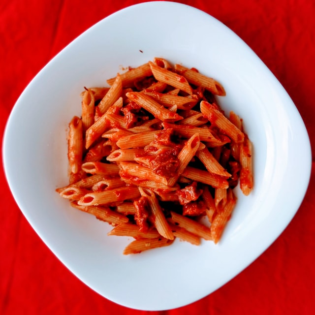

Tomato Pasta Recipe

Description
Deliciously simple meal, made from storecupboard ingredients.
Ingredients
Serves two
- 100g penne pasta
- A clove of garlic
- A tin of chopped tomatoes
- Basil (frozen or dried)
- Parsley (dried)
- A pinch of sugar
- Chilli flakes (optional)
Steps
- Chop garlic clove.
- Put the pasta in a pan of boiling water.
- Put all the remaining ingredients in a food blender and blend to make tomato sauce.
- Put tomato sauce in a pan and heat on medium.